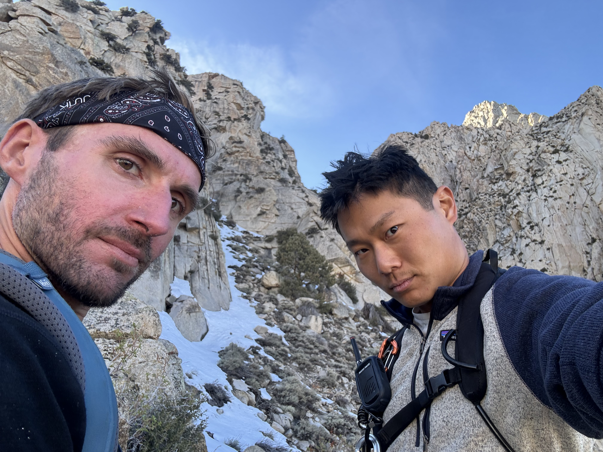
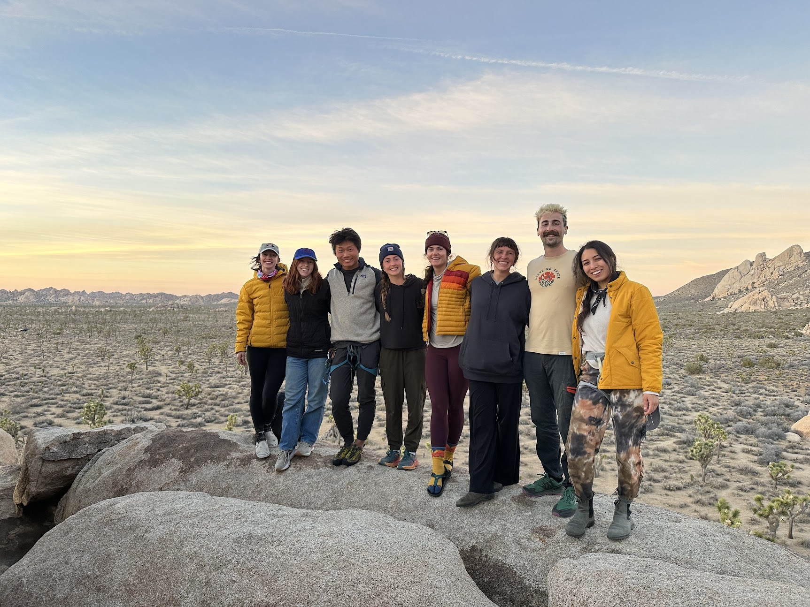
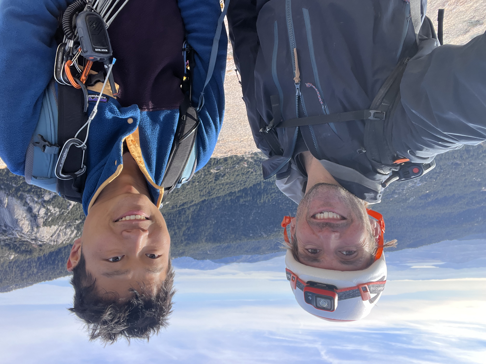
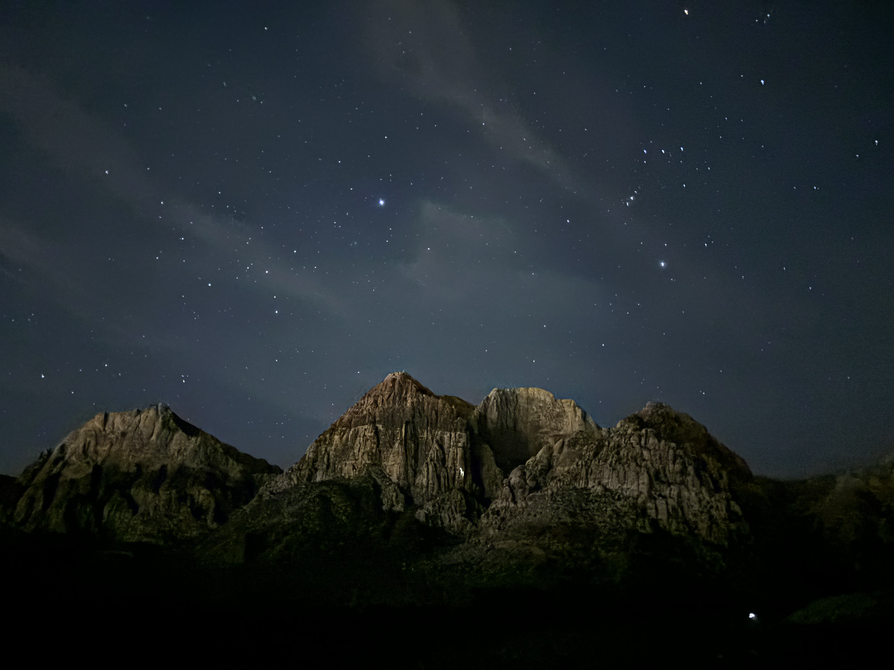

2025
- Long Time No SeeDate TBD
-
JFMRDate TBD

- Rock On & Butt Lite (8)Date TBD
-
Cryptic & SW Corner (7)Date TBD

Expeditions
Featuring Danny, Alex, Connor, and Evelyn
A running log of big routes completed and what's next, shown as a clean timeline.
Dates come from route subpages where they are published.



